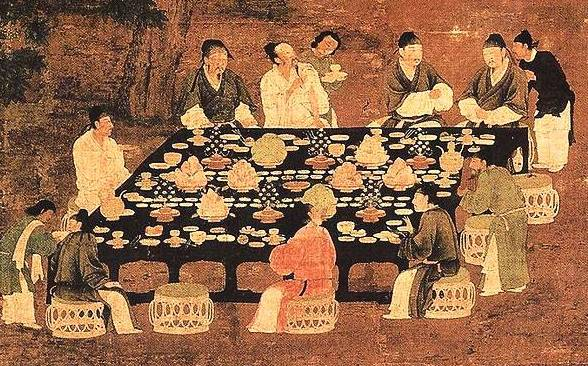

收录于合集
天朝意识与明清中国的朝贡外交
王泉伟
**内容提要 ** 观念影响了明清时期的中国外交决策。明清中国通过朝贡体制来处理对外关系。朝贡体制的核心是不平等的等级关系，中国自视为天朝，是天下的共主，不承认存在与自己对等的势力，维持天朝的体面成为明清朝贡体制的底线。天朝意识限制了明清中国的外交选择，其中最重要的就是屏蔽了平等议和的可能性，由此深刻地影响了一些重大的外交决策。通过分析明代的和议、晚清与西方列强的交往可以发现，即使出现了势均力敌乃至比自己更为强大的外部势力，明清中国也拒绝放弃天朝的自我想象，极难接受对等的外交。天朝意识妨碍了冷静的战略思考与明智的外交决策，使中国陷入进退失据的境地。从结果上看，对于天朝地位与朝贡等级秩序的坚持损害了明清中国的安全与利益。
**关键词 ** 中国政治与外交 朝贡体制 明清 天朝 观念
本文试图揭示“天朝”的自我想象这一观念性因素对明清中国外交决策产生了重大影响。在明清时期，朝贡几乎成为中国对外交往的唯一形式。朝贡体制的核心是不平等的等级关系。明清时期，中国自视为天朝，中国皇帝是天下的共主。外部势力前来中国朝贡，中国对其进行册封，双方通过朝贡交往确立了宗主国—附庸国的关系。那么，为什么中国构建出这样一套体制来处理对外关系？物质因素无法有效地解释朝贡外交的全部，需要将观念因素也纳入考察。要证明天朝理念对外交决策产生了影响并了解其具体的作用方式，需要深入到对外决策产生的过程中。究竟是什么因素、哪些考虑决定最终的对外决策？天朝理念在其中处于怎样的位置？天朝的自我意识通过怎样的方式来影响着最终决策的内容？本文将尝试回答以上这些问题。

一、朝贡体制的动力机制
朝贡体制是古代东亚地区的一套外交体制，费正清称之为“中国的世界秩序”。他认为，古代东亚地区存在着一个以中国为中心的等级秩序，中国将所有的对外关系都被纳入朝贡体制之中。在这一体制下，中国皇帝赋予邻国统治者官衔与地位，确认其政治上的正统地位，外国统治者则承认中国皇帝至高无上的地位，以交换商业贸易等利益。作为东亚地区独特的外交体系，朝贡体制受到了持续的关注与研究。近来，许多国际政治的学者也开始对朝贡体制产生了兴趣，又进一步丰富了相关的研究。然而，中国为什么要通过朝贡体制来处理外交关系？对于其中的动力机制，仍然是众说纷纭。
（一）为何建立朝贡体制：现有研究的争议
费正清的朝贡模型产生了持续的影响力，长期主导着朝贡体制的研究。在他看来，中国建立朝贡体制主要是为了获得威望和合法性，以巩固国内的统治。可以看出，他较多地偏向观念方面的原因，后继的研究者并不满足于此种较“虚”的解释，他们希望能够透过表象，深入本质，寻找更加“实”的内容。
很早就有学者注意到朝贡体制的表里不一。在费正清主编的奠基性著作《中国的世界秩序》一书中，哈佛大学已故历史学教授杨联升与新加坡著名历史学家王赓武指出，以中国为中心的世界秩序存在着“神话”与“事实”两个面向。芝加哥大学教授何伟亚也认为，朝贡体制存在着“理想与实用，文化原因与实际原因，表象与政治现实”等多重特征。山东师范大学教授李云泉将之总结为虚实两面。荷兰莱顿大学教授吴劳丽在研究清朝与中亚浩罕的关系时，发现在中国的对外政策中存在着意识形态与实践之间的巨大鸿沟。厦门大学教授庄国土认为中国与东南亚各国的朝贡体系是“虚幻”的，完全只是为了“满足中国统治者虚骄心理的自我安慰”。庄国土的看法或许言过其实，但是，表象与现实之间的巨大差距确实是普遍存在的。既然如此，就有理由怀疑，在天朝背后是否蕴含着更加真实的意图。这些意图才是中国建立朝贡体制的真正动机。
现中山大学教授滨下武志认为，中国的真正目标是贸易利益。朝贡体制更多是一种精心安排的贸易制度，中国主要是出于经济而不是威望目的来设计朝贡体制，中国通过此种机制获得了大量的贸易利益。国际关系学者更多地从安全等角度来加以解读。广东外语外贸大学教授周方银借助博弈论的工具，认为朝贡体制的建立是中国与周边邻国策略互动的结果，他将中国与相关的朝贡国都想象为根据自身实力进行理性计算的行为者，并推导了均衡达成的过程。美国弗吉尼亚大学教授布兰德利·沃马克以中越关系为例，指出道德考虑虽然起到了部分作用，但真正起到决定作用的是现实主义的权衡，决定中越两国关系的主要是双方实力的消长。他认为，在中国没有能力武力征服越南的情况下，建立朝贡关系可以保证边境的稳定，越南也因此免除了北方的威胁，这是双方长期博弈的结果。辽宁社科院陈志刚分析了明代中国的外交体制，认为相较于威望等因素，朝贡体制的真正中心在于国土防御。通过与周边国家建立朝贡关系，中国保证了自己边境的安全，减少了防务压力，体现了传统“守中治边”“守在四夷”的战略智慧。江忆恩研究了明代与蒙古之间的关系，认为起主导作用的是权力政治因素，孔孟理想主义几乎没有发挥影响。美国西密歇根大学副教授王元康更为明确地提出，朝贡体制的核心只有“硬实力”，朝贡关系的建立与维持都是实力较量的结果。总之，这些学者试图证明朝贡关系的核心是现实主义的利益考虑，天朝的辞藻只起到了修饰作用，观念因素没有对最终决策产生影响。
这些物质主义倾向的理论无疑揭示了朝贡体制中非常重要与基础性的一面，但是，问题在于，物质因素是否能够概括朝贡体制的全部？这些分析所无法回答的一个问题是：如果朝贡关系都是利益追逐与实力较量的结果，为什么一定要采用宗主国———附庸国这样的形式？为什么中国要坚持用朝贡———册封这样的方式来处理对外关系？如英国布里斯托尔大学教授张勇进和巴里·布赞所指出的，明清中国的朝贡关系在实质上更像是霸权关系，而不是朝贡话语所描述的宗主———附庸关系。美国南加州大学教授康灿雄也指出，在形式上的不平等背后，是实质上的平等关系，即使最亲密的朝贡国———朝鲜和越南，在实质上也应该更多地被看作是一个主权独立的国家，而不是中国的附庸国。朝贡册封关系的形式大于实质内容，中国要获得安全与利益，并非一定要建立起朝贡与册封关系。即使不采用朝贡体制，而套用威斯特伐利亚体系的规则，周方银等人所描述的那种策略互动也一样可以实现。甚至如沃马克所指出的，如果中国抛却朝贡体制，或许能在这些问题上处理得更好，他认为朝贡关系在处理对外关系时存在着致命的缺陷，它“不能管理好不断增强的关系”，因为在本质上，“这一（话语）体系不承认彼此利益的差异，也不允许就这些利益公开地谈判。”南加州大学荣休教授、汉学家卫思韩也指出，明清中国在通过朝贡体制处理外交事务时，更加注重表象而不是现实，经常拒绝承认现实，容易沉浸在自我膨胀的现象之中。这样就出现了悖论，被滨下武志、周方银等人假定按照理性的利益计算而建立的、高度现实主义的朝贡体制，却在实际中自动屏蔽了利益的公开谈判，且频繁地无视现实。这在逻辑上显然是说不通的。以上的悖论必须引入观念因素才能够得到解释。
在解读朝贡体制时，观念决不是无关紧要的粉饰之词，它需要被认真对待。新加坡历史学家王赓武认为，朝贡体制的实质是优越性与安全两方面的综合考虑，其中优越感是“核心”。王赓武很早就认识到了朝贡体制存在着神话与现实两个面向，他指出，在实际的外交实践中，安全与实际利益是决策的重要影响因素，从这个意义上说，他无疑是物质解释范式的先驱者。但是，他同时也非常重视“辞令”的研究，他详细追溯了中国优越感的来源，并认为这种优越感对外交实践影响巨大，具体到明朝与东南亚关系的案例，王赓武发现中国优越性的自我认知深刻地影响了对外政策与外交行为。芝加哥大学教授何伟亚通过分析马嘎尔尼使团来华的历史，认为需要认真对外朝贡体制中的观念因素，他尤其强调世界观的因素。他认为，清朝中国与英国关于世界应该如何运行都有着一套属于自己的世界观，两者之间缺乏妥协的可能，正是对世界秩序的不同认识，而不是物质利益的分歧，成为了双方外交冲突的根源，导致了马嘎尔尼使华的悲剧结果，这次中英交涉被称为礼仪之争是有道理的。另外，在近代的中西交往过程中，观念因素也发挥了重要作用，如华东师范大学教授茅海建所揭示的，在鸦片战争时期，君臣上下都以天朝思维来思考外交问题，即使是在军事上处于压倒性弱势，中国依然不肯放弃自己的天朝观念。第一次鸦片战争如此，第二次鸦片战争依然如此。事实是，中国直到八国联军侵华之后，才真正放弃了天朝观念，开始接受自身落后的现实，这显然是不理性的，对此，物质主义的分析同样无法给出有效的解答。
以上这些学者都指出，天朝意识并非无关紧要，它对于最终的外交决策产生了很大影响。需要指出的是，强调观念因素发挥了作用并不是彻底否定了物质因素的作用，如王赓武就采取了两者兼顾的态度，但是，在具体的外交决策中，观念因素与物质因素之间到底是如何被权衡取舍的，这些学者也没有进一步说明。需要有新的分析框架来探讨这两种因素发挥作用的方式。
（二）追踪观念：一个简要分析框架
观念因素与物质因素完全可以共存。关键的区别在于，“一种观念理论认为观念性因素可以独立于客观物质环境，并且影响了最终的决定。如果没有观念因素的影响，决定的结果将会非常不同。”某种程度上这类似于温特所倡导的“弱式物质主义”，既不否定物质因素的作用，也给观念因素留有一席之地。
观念不像行为一样容易追踪，证明观念对决策产生影响是一个困难的任务。必须寻找一些特殊的情境，将观念因素与物质因素的影响区分开来，常见的方法就是寻找观念的“迟滞”现象。在某些情况下，能够观察到环境变迁过程中观念变化的“迟滞”。历史制度主义认为制度有路径依赖的特点，存在着一定的惯性，观念系统也有类似的特点。当环境已经发生了变化，却没有在观念上产生类似的反应时，就能够将观念作为一个独立的变量加以研究。在这种场合中，“认知结构抵制了变迁”，物质环境已经发生了巨大的改变，但是，相应的观念却拒绝适应改变。另外，江忆恩在其战略文化的研究中也给出了一个有意思的框架，他也面临着如何追踪战略文化影响的问题，他认为，要证明战略文化的效用，“标准的方法论解决方案是，观察战略文化的备战模式与结构现实主义模式相比，是否可以对行为做出另外的、独特的预测”。也就是说，拿结构现实主义的预测作为靶标，来观察最终的决策结果是否吻合。从这个角度来看，周方银、沃马克等物质主义的研究将是非常合适的参照系，他们大致根据结构现实主义的假定给出了天朝行为模式的预测。要证明天朝理念的影响，就必须寻找到一些特定的情境，在这些情境中，受到天朝理念影响的外交决策背离了物质主义者的预测，这两种方法基本是互通的，它们都明白地指出了追踪观念需要寻找到一些“反常”的情况。
天朝理念是一种世界观式的信念。儒家学说有一整套关于世界秩序的完整理论，学术界多称之为“天下观”，“天朝”理念与“天下观”可以看作是同一套意识形态的不同表述方式。“天下”从整体上对世界秩序进行描述，而“天朝”更多从皇帝与朝廷的视角来描述世界秩序，两者所秉承的世界观是一致的。戈尔茨坦与基欧汉认为，当观念采用世界观的形式时，“对人类行动具有最广泛的影响”，他们称世界观为“可能性”信念，它规定着行动可能性的领域。世界观形式的信念一旦被行为者接受就很难被撼动，也正是因为此种特性，使得特定情况下观念的迟滞效应更加明显。如霍尔所说，即使一种制度化的世界观已经变得不符合现实情况，秉承这一世界观的行为者也难以根据现实做出调整，观念系统可能会出现“长久性的迟滞”。这种长久性的迟滞对追踪观念因素来说是非常理想的，所以，要追踪天朝理念的影响，关键在于划定“可能性”的范围，找到“可能”与“不可能”之间的界线，也就是观念系统所能够接受的底线。
二、天朝理念的解析
天朝观念既是一种世界观，同时也是王朝的合法性理论。天朝体面的破坏就意味着整个礼制秩序的破坏，导致“礼崩乐坏”的结局，动摇王朝的统治根基。维持天朝体面是维持王朝合法性基础的重要部分，同时，天朝意识也已经成为了一种根深蒂固的思维习惯，在深受儒家思想影响的皇帝和大臣们看来，朝贡体制是理所当然的。天朝理念所内含的世界观由大一统理论系统地阐发。自汉武帝时期“罢黜百家，独尊儒术”以来，大一统理论一直是中国王朝的官方意识形态。天朝理念并非没有弹性，早在汉代，儒家就通过“不臣夷狄”等理论构建了一套可以自由伸缩的天下观，但在宋代之后，随着中国进一步“转向内向”，天朝理念的弹性变得更小，教条化更加严重。明清将宋代的程朱理学定为官方意识形态，也因此受到了教条化天朝理念的持续影响。天朝体面的维持成为了明清外交活动中不可动摇的底线。
（一）灵活的天下观
“天下”理念的起源甚早。《尚书·禹贡》中将天下描述为九州，战国阴阳家邹衍提出了“大九州”的概念，《周礼·王制》又构建了一个华夏居中，蛮夷戎狄局四方的五方秩序。最初的天下观更多是一种地理的认识，不过也包含了部分华夏中心主义的政治意识。《诗经·小雅·北山》中的名句：“普天之下，莫非王土；率土之滨，莫非王臣”，则明白无误地将这种普世王权的意识表达了出来。在秦汉统一中国之前，天下主义在华夏文化中就已经根深蒂固。已故哈佛大学教授史华慈注意到，尽管在战国后期华夏世界处于列国分立的局面，但是诸子百家“仍坚持自古就有的普天王权观不放”，几乎所有的思想家都将列国状态视为“不正常”，渴望建立天下主义的政治秩序。
不过，此时的天下主义多停留于思想家的构想之中，没有太多地影响实际中的政治决策，真正让天下主义从江湖走向庙堂，深刻融入政治生活之中的还是要从汉代开始。汉武帝“废黜百家，独尊儒术”，接受儒家的大一统理论作为论证王朝合法性的根基，天下主义由此成为了王朝的官方意识形态，其影响开始渗透到政治生活的方方面面，自然也包括对外关系领域。此后，外交决策将不得不顾及天下主义的话语体系，以维持王朝合法性理论的完整。为了融合天下理念与外交实践，汉代很多儒者进行了外交理论的探讨。很多学者都注意到，汉代儒者在对外关系理论方面有创造性的贡献，用于指导外交决策的天下观很大程度上是由他们构建的。
汉代大一统理论的集大成者是董仲舒，他系统地阐述了天命、天下、天朝等观念，认为天是宇宙的主宰，“天者，百神之君也”，拥有者至高无上的地位。皇帝（也就是“王者”）的权力来自天授，他接受了天命的委托，作为天的代理人（“天子”）来统治世界。董仲舒谈到：“王者必受命而后王。王者必改正朔，易服色，制礼乐，一统于天下，所以明易姓非继人，通以己受之于天也……地必待中，是故三代必居中国，法天奉本，执端要以统天下、朝诸侯也。是以朝正之义，天子纯统色衣，诸侯统衣缠缘纽，大夫士以冠参，近夷以绥，遐方各衣其服而朝，所以明乎天统之义也。”
概括而言，天朝理念的要点有三：（１）王者受命于天，代表天来统治天下，所以也称“天子”。天是唯一的，天命自然也是唯一的，天下的王者也应该是唯一的。历代皇帝为了证明自己的合法性，都要努力证明自己才是天命的真正接受者（“正统”），而其他竞争对手所宣称的天命是假的（“伪朝”），由此产生了关于正统的无休止争论。（２）要显示自己是受命于天的王者，就必须建立起一套完整的礼仪制度，包括历法、服装、交往礼节等。受命于天本就带有宗教性色彩，礼仪制度其实起到了类似于宗教仪式的作用，故而是神圣不可侵犯的。破坏礼仪等于是亵渎了宇宙万物的神圣秩序，绝对不能容忍，由此也可以理解为何礼仪问题会频繁成为中外交往的争议点。（３）内中国而外夷狄的华夷秩序。中国不是一个更高级的文明，而是整个世界的唯一文明，居于世界的中心位置，在其外围是“夷狄”所居住的未开化地区，华夷秩序同样也是天朝理念的重要部分。
从这一套合法性理论可以看到，中国传统皇权“建立在传统权威与卡理斯玛权威兼而有之的合法性基础之上，即一方面来自传统权威的祖宗之法，另一方面来自君权天授的卡理斯玛权威”。所以，有学者指出，中国传统帝制其实是一种政教合一的政体。天朝不承认有与自己平起平坐的国家，核心不在于“国”，而在于“王者”。天命是唯一的，接受天命的王者自然是“天下”最高权威的所在，普天之下不可能有任何与中国皇帝对等的存在，草原的酋长、朝鲜的国王、日本的天皇、英国的国王都只能是皇帝的臣仆，任何与天朝交往的外国必然都是前来朝贡的臣属。在威斯特伐利亚体系中视为当然、奉为基石的主权平等理念，正是朝贡体制所绝对不能接受的原则。早在１９３６年，蒋廷黻就指出，天朝观念断绝了任何平等外交的可能性；王赓武也指出，在中国人的观念世界中，朝贡关系是唯一的一种与他们对已知世界的看法不相冲突的正常关系。在明清中国的世界观中，不平等的朝贡———册封关系是唯一能够想象的外交关系，除此之外没有可供选择的方案。对等的国家间关系与大一统理论在根本上是冲突的。
如果严格按照天朝理念来指导外交行动，中国将背负几乎无限的外交负担。理想中的天朝秩序要做到“王者无外”，保证“普天之下莫非王土”，所以，中国皇帝一再强调“一视同仁”，无论是中国的民众还是藩属的民众，都是皇帝的赤子。这意味着中国应该将所有已知的国家都纳入朝贡关系中，不能容许存在游离于王者统治之外的角落。如贾谊所称：“古之正义，东西南北，苟舟车之所达，人迹之所至，莫不率服，而后云天子。”只有真正一统世界才可以称得上是天子。
然而，在实际中总是有中国无法彻底降伏的外部势力。在大一统理论创立的两汉时期，也正是汉与匈奴长期相持的时期，作为一个明显的反例，匈奴等“敌国”的存在是天下理论所必须要加以解释的问题。为了应对这些理论困境，一种灵活的天下观被构建出来。天命所覆盖的天下成为了一个可伸缩的概念，广义的天下等同于世界，狭义的天下就是指代中国。孔孟的学说将天下与道德秩序联系起来，在孔孟看来，“天下”就是所有接受儒家道德的人所组成的共同体。儒家认为他们所揭示的道德伦理根植于人的本性，原则上可以适用于全人类，因此，天下本应该是普世，正所谓“夷狄入华夏则华夏之”，任何人都可以通过学习儒家的礼来成为华夏的一份子。那么，为什么还会存在无法接受儒家道德的夷狄呢？儒者的解释是因为这些夷狄根性太过顽劣，难以开导，所以，儒者声称历代的圣王们对待夷狄都是“禽兽畜之”，不用治理人的道德伦理去约束他们，等于是否认夷狄被称为“人”的资格。所以，中国的统治者不需要费心向这些夷狄推行教化，也就是所谓“王者不臣夷狄”原则。这一理论的精妙之处在于，它同时照顾了政治神话与现实主义的外交权衡，对于那些愿意接受朝贡原则的势力，中国统治者可以一体接受其膜拜；对于那些鞭长莫及的、不愿意来朝贡的势力，可以用“王者不臣夷狄”予以合理的解释，不用担心会影响天朝的神话。
“不臣夷狄”的原则使得天朝不需要通过征服全世界来证明自己的合法性。费正清认为，天朝需要外国的朝贡来确立自身的权威，虽然抓住了重要的内容，但是其理解无疑存在着偏差，在某些特定时刻，中国确实需要用万国来朝来证明自己接受了天命，如王朝初建、王位不正常更替的时刻。但是天命的象征绝不仅仅是万国来朝，“河图出”“黄龙现”“黄河清”“嘉禾生”等等所谓的天降祥瑞同样也可以证明天命的归属，这些可能比万国来朝还更有分量。另外，如果王朝的威望取决于外国的朝贡，那么，朝贡的减少将削弱王朝的权威，这也与历史不符。明代中后期朝贡国日渐减少，明朝统治者并不为此焦虑，甚至主动削减朝贡频次；清朝则自始就保持着较少的朝贡关系，也不妨碍他们逐渐建立起权威。朝贡外交肯定影响着王朝的威望，但并非以费正清所描述的方式。
（二）天朝体面的底线
“不臣夷狄”论虽然强化了天下观的弹性，但此种弹性也不是无限的，底线依然存在，对于平等的焦虑始终伴随。随着后世儒化的加深，天朝理念愈加教条化，在底线被触碰之时的自由选择空间也越来越小。讽刺的是，天朝理念的教条化不是发生在中国声威远迄的汉唐时代，而是积弱的两宋时代，在宋代，传统的天下观“受到了真正的威胁”。宋代长期与辽、金、蒙古等政权保持着事实上的平等外交关系，有时还甚至是低人一等的藩属关系。天朝的理念与平等的现实之间出现了极大的撕裂。
面对强大的外部威胁，有识之士激扬民族自豪感是非常普遍的现象。宋代中国处于列国体制之中，在周边拥有着势均力敌的对手。台湾大学教授陶晋生曾谈到，自两汉以来，中国的主流文化即“以平等为耻辱”，在平等越是昭然的时刻，此种耻辱感就越加强烈，因为宋代的积弱导致“大耻和奇辱的长久存在”，又“逼出夷夏之辨的长久激化”。儒家学者没有选择承认平等的现实，反而更加坚定了华夏优越感的信念。许倬云敏锐地指出，宋代儒者的华夷之辨“内涵是列国体制下孕育的国族认同”，类似于近代以来的民族认同，但是在表述方式上，却“又以天朝上国的天下意识为理论的寄托”。最终，朱熹为理念与现实之间的分裂提供了说得过去的答案，他主张以文化来区分“中国”和“夷狄”，坚持了中国的文化优越性。针对辽、金等国明显更加强大的武力，朱熹认为“中国所恃者德，夷狄所恃者力”，强调中国虽然在武力上落后，但是在德性上更加强大。按照儒家的理念，天下有德者居之，朱熹的潜台词就是德性强大的中国最终将战胜夷狄。朱熹的华夷观念基本代表了宋明理学的主流认知。
从现代人的视角来看，理学家的华夷观念是非常自欺欺人的。为了摆脱平等关系带来的耻辱感，宁愿沉浸于自己的幻想之中，也不愿坦然地承认现实，观念与现实愈加脱节，进而极大限制了冷静的战略思考。葛兆光也注意到随着两宋时代夷夏之辨的强化，唐宋关于和平与战争的观念也发生了重大转变。在唐代，和平与战争都是政策的选择项，无论是鼓吹战争还是提倡和平，“政治立场并没有绝对的正义和非正义的差异”，但是到了宋代，“坚持主战成为了士大夫中唯一政治正确的立场”。严格地说，天朝没有“和谈”，和谈只存在于平等者之间，藩属国只有“输诚”“纳贡”的资格，而天朝的册封和开放贸易都是一种“恩赐”。“和谈”作为一种外交手段成为了政治不正确，此种影响一直持续了下去。宋代以后，在中国外交政策的选择项中，“和谈”这一可能性已经被屏蔽了。
明清王朝都将程朱理学定为官方意识形态，也接受了理学家们所强化的华夷秩序观念。在近代之前的绝大部分时间中，明清都没有遇到实力上压倒自己的对手，这又进一步巩固了他们的优越感与自信。不进行平等交往本应是天朝理念的底线，在明清正式的外交制度中，也确实排除了所有平等交往的空间。但是，“正式”并不意味着“现实”，在实践中还是有很多与天朝的理想不尽符合的外交关系，在天朝体面不受到根本损害的情况下，可以进行部分的妥协，所以，实际中的观念底线比这还要更低一点。
朝贡体制中的礼仪可以看作是一种“表演”，需要用一系列象征来展现国际体系的内涵。表演是做给特定的观众看的，在观众存在的地方，表演必须严格地按照既定的剧本进行，而在没有观众的地方，表演也就可以不用那么严肃。卫思韩敏锐地指出，朝贡体制的关键是确保天子的至高无上地位能够“在首都”被维持。天朝的舞台是首都，观众是首都的官员与民众。已故普林斯顿大学著名内亚学者约瑟夫·弗莱彻在考察了明清与中亚地区的关系后也有相似的洞见：“在帝国内部，世界宗主的神话是统治中国很有用的思想工具，沙鲁克·伯哈德的使节们和后来的和卓们都发现，这个神话是不能打折扣的。但是在对外事务中，这个神话经常是一个障碍，所以，皇帝就悄悄地自行其是，而不是按嘴上说的做了。”
在观众面前，神话必须得到维持，现实的妥协必须保证在观众视线之外进行，在远离首都的边境甚至国外“悄悄地”地进行，“悄悄地”一词传神地道出了天朝表演内外不一的实质。所以，关键不在于边境之外是否有抗命的夷狄，而在于天朝的朝堂之上只能有屈膝跪拜的朝贡使者，在实际中可以接受非朝贡式的外交关系，但是，一定要保证所有前来首都朝贡的外国使节都遵循天朝设定的朝贡规则。总而言之，就是拒绝将平等关系在政治仪式上正式化，这是天朝理念真正的底线，也是接下来观察观念迟滞的起点。
三、明清时期的朝贡僵局与危机
朝贡体制的核心是不平等。一旦有外部势力试图冲击平等这一底线，并且拥有足够的力量，朝贡体制将面临着巨大的危机。中国在这种情况下面临着两难的困境：现实主义的实力权衡告诉决策者，冲突与战争并不符合国家利益，应该与外部力量进行谈判，以争取获得有利的和平。但是，和谈也就意味着承认对方的对等地位，这将从根本上冲击着天朝体制。为了维持天朝体面，中国只有选择继续战争，从而严重损害自身的利益与安全。由于缺乏平等地缔结和约这一选择项，中国在历次朝贡僵局中往往被逼入进退失据的境地，付出极为惨重的代价。明清时期主要的朝贡僵局有俺答求贡、明清和议及两次鸦片战争，在这些危机中可以看到非常类似的行为模式。
（一）固执的代价：明代的和议
明代在处理与蒙古及后来的满洲关系时，都陷入了僵局，明代蒙古与满洲问题症结基本是一致的。蒙古和满洲都希望明朝能够开放边境的贸易，以获得所需要的粮食、纺织品和铁器，但明朝方面一直奉行着“贡市合一”的政策，只有那些愿意接受朝贡关系的国家才被允许前来朝贡贸易，这意味着蒙古与满洲都必须称臣才能够获得贸易的资格。蒙古与后来的满洲显然都不愿意接受藩属国的地位，他们寻求与明朝平等相处，双方的矛盾无法调和。对于不愿顺从的夷狄，天子的做法就是“绝之”，于是明朝封闭了边境的贸易，无法获得贸易权力的蒙古与满洲选择抢劫边境来获得所需的物资。
这种局面对双方来说都是不愿意看到的。就蒙古与满洲方面而言，贸易的断绝使他们面临着物资短缺的问题，尤其是蒙古方面，铁器和纺织品极度短缺，抢劫只能部分缓解问题，因为边境地区的物资并不丰富，尤其是纺织品很少，而且蒙古的入侵也伴随着比较大的伤亡，终究不及和平贸易所带来的好处。所以，当时蒙古强大的俺答汗（蒙古方面称阿勒坦汗）依然执着地寻求开放边境贸易的机会，他曾经六次（１５４２、１５４６、１５４８、１５４９、１５５２、１５５４）请求明朝开启边境的马市，每次都被当时的嘉靖皇帝严词拒绝，甚至俺答汗求和的使臣也多次被明朝方面杀害，求和不成只能诉诸战争，每次求和失败之后就是惨烈的掠夺战争。其中１５４９年求互市失败后，俺答汗于次年（１５５０）大举入关，继土木之变后第二次攻入北京附近，使明廷极为震动。１５５０年的北京之围后曾经有过短暂的马市，但明朝本是迫于军事压力，原无诚意，不久即停止了各处的马市，导致战端重开。因为蒙古屡次入侵，更加深了明朝对于蒙古桀骜敌对的印象，愈加不愿意“恩赐”其朝贡贸易，反过来导致蒙古只能进一步通过掠夺来获得所需要的物品，如此恶性循环。
明朝无疑也为自己的顽固付出了巨大的代价。屡次抢掠给边境造成了巨大的破坏，另外，因为边防压力的增加，军事开支节节攀升。平均每年军费上升至４００万两以上，而当时一年的国库收入不过２００万两，明朝面临着破产的危机。造成如此僵局，嘉靖皇帝要负很大的责任，他坚决反对向“犯顺”的夷狄妥协，执意在俺答汗称臣之后才允许开放互市。不过，皇帝并不孤独，除了部分在熟悉夷情的边疆官员及少数头脑清醒的中枢政治家，主流舆论界可以说都是站在皇帝一边的，其中以杨继盛的言论最有代表性，他明确点出在蒙古未称臣的情况下，与蒙古进行互市贸易就是与蒙古平等议和。他认为，“以堂堂天朝而下与犬羊马市”，实在是有损“国家之大威”，为奇耻大辱，对于不肯顺服的夷狄，天朝应该坚决与之断绝联系，严守边防，乃至出塞击破之。一派书生清谈，却很有代表性，杨是嘉靖一朝的名士，有正直敢言的名声，这番言论也为他赢得了舆论的喝彩。从杨继盛的言论中也可以看到，反对和议者并非是对具体的和平条件有意见，他们反对的是和议本身，反对的是“和议”一词所默认的双方平等身份。
后嘉靖皇帝去世，其子隆庆皇帝继位，中枢执政的是高拱与张居正这两位大政治家，他们终于开始调整对蒙古的政策。借助一个偶然的契机，明朝主动与俺答汗议和，最终达成了和议（１５７１年）。在明朝的记载中，俺答汗最终向明称臣，并接受了明朝“顺义王”的册封，但蒙古一方却记载着明与蒙古“两大国”是平等缔约，和议是明国慑于俺答汗的兵威而最终签订的。明朝皇帝为了表达尊重，给俺答汗奉上了“绥王”（即顺义王）的尊号，并向蒙古贡献大量财物，同时开放了边境的马市。蒙古一方的记载可能更接近实情，俺答汗没有理由向明朝称臣，汉文的记载被人做了手脚，甚至明朝人自己也不讳言这种操作。当时负责和议的边臣王崇古开发了一种手段，来掩饰实质的平等条约，在蒙古方递交国书之后，边臣重新向俺答汗索要一张盖了大印的空白纸，然后先用汉语书写一份符合天朝威仪的贡表，再由翻译将之译成蒙文，写到盖了俺答汗大印的空白纸上。这样就凑齐了朝贡所需的番汉两种文字的贡表，也就是可以在汉文资料中看到的那份语气极为谦卑的文字，至于真正的原始国书则不上交朝廷。之所以要费这番功夫，原因在于蒙古方的国书中多有“触忌讳”的内容。可以想象，俺答汗真正的国书肯定是以平等的语气书写的，所以，明朝方面千方百计地要加以掩饰。
此次和议史称“隆庆和议”，后世对此评价甚高。和平持续了数十年，一直到明末西蒙古地区都没有什么战事，边境得到了休养，同时节约了大量的人力物力。和议达成之后，虽然每年收买马匹、给予蒙古贵族赏赐也花费不赀，但是要远远少于战争的费用。双方都做了一些让步，俺答汗为了获得贸易的好处，默认了明朝的两面做法；明朝方面也默认了俺答汗使用平等的口气向边臣递交国书，只是在最后呈交给朝廷的正式文书方面做手脚。明与蒙古的互动也停留于边境，蒙古使臣并不前往北京，避免了礼仪之争。如前面所说，明朝最终“在首都”保住了天朝的体面，从最终结果可以看出，蒙古是有和谈诚意的，之前数十年双输的战争很大程度是因为明朝的固执。在明显无法阻止蒙古侵袭的情况下拒绝了对方主动的和议，让自己承受了巨大的伤害，根本原因就在于平等的外交关系与天朝的体制无法共存，最终明朝也没有在这一底线上让步。为了掩饰实质上的对等关系，只能依靠篡改国书这样自欺欺人的手段，相比于明朝，蒙古方面对于平等关系要坦然得多，或者说在当时蒙古人的观念中，平等是一种“正常”的关系。
满洲情况类似。满洲虽然后来统一了中国，但不代表他们一开始就有入关的野心。如果放弃后见之明，站在当时的角度来看待满洲问题，可以发现他们的行为模式与蒙古是非常类似的。占领辽东之后，满洲方面也面临着经济上的困难，多次提出了和议，请求明朝开放贸易，其求贡方式与俺答汗几乎一模一样，伴随着求贡—不许—战争的循环。皇太极时期五次入关，每次都投递了大量的文书，请求明朝的官员转告自己求和的愿望，但都被中枢拒绝。
当时国内农民大起义爆发，明朝面临农民军与满洲的两面夹击。在局势危难中崇祯皇帝终于同意派人前往议和，但他仍不愿意放下天朝的架子，写了一份非常高高在上的书信。这封外交书信名义上是皇帝写给兵部尚书的，避免了双方元首之间的直接对话。即使如此，皇太极依然接待了使臣，并主动做出退步，最后提出的条件是皇太极可以废除皇帝称号，仍称可汗，并由明朝方面铸印信，条件是明朝开放边境的贸易及提供赏赐。应该说，皇太极已经放低了姿态，虽然在整体上保持对等关系，但在礼仪方面愿意接受稍微低于明朝的安排。与俺答汗的和议已经给出了较好的榜样，如果照着这个走向继续下去，或许有可能套用俺答汗的模式，达成一个假称臣而真对等的和议。可惜一次偶然事故导致和谈的消息泄露，一时间舆论大哗，又一次掀起了所谓国体受辱的大抗议，负责和议的官员受到激烈攻击，崇祯皇帝为了照顾自己的面子，处死了主持和议的官员，从此彻底断送了和议的可能。此后，明朝便在满洲与农民军的两面夹击中走向了灭亡，可以说和议的失败间接断送了明朝的江山。
（二）天朝的崩溃：清末的转型
总体而言，清朝在处理对外关系时要比明朝更加务实。满清以内亚民族入主中原，至少在其早期，较少地受到天朝教条的束缚，尤其是在处理内亚事务时，比明朝更多理智。他们创立了互市国的体制，不再坚持贡市合一的原则，互市国是那些不愿意被纳入朝贡秩序中、但又想与中国进行贸易往来的国家。如果拒绝其贸易要求，他们可能会转而诉诸战争，如明代的蒙古与日本等势力，所以，清朝政府开放了部分口岸，允许他们自由前来互市。当时主要口岸有北方的恰克图与南方的广州，前者是与俄国的贸易口岸，后者主要是与英、美等国的贸易口岸。
清朝前中期对外关系中最大异数就是与俄罗斯的关系，双方在相当平等的基础上进行着外交活动。《尼布楚条约》被公认为具有对等的内涵，有近代国际法的精神，康熙与雍正皇帝也一直将俄罗斯视为“与国”，即对等的国家。康熙时期派遣图里琛出使俄国，雍正时期派遣托时与德新等人出使圣彼得堡，都曾经明令其按照俄国礼节向沙皇跪拜行礼，即是明证。但是，这种平等依旧没有“正式化”，非常重要的一点是，双方的往来国书从来没有以皇帝的名义进行。早期清朝以主持《尼布楚条约》的索额图个人，以及黑龙江将军等名义行文俄国对口机构与个人，后来主要以理藩院名义行文。或许可以用汉匈之间的和亲来进行一个简单对比，当时汉匈双方的国书皆以元首名义发出，汉朝称“汉皇帝敬问匈奴大单于无恙”，匈奴称“匈奴大单于敬问皇帝无恙”。形式上的真正平等需要在国书的称呼中得以体现，但在中俄关系中这一点是缺失的，清朝的中俄关系颇类似于明朝与俺答汗之间的和议，实际上是平等的，但在名义上终究是差了一层。清朝初期的君臣对于实质的平等关系更加坦然，也比明朝走得更远，但也没有真正接受全方位的对等关系，康熙与雍正的态度也是矛盾的，在一些场合承认与国的同时，在另一些场合却又坚持着天下共主的宣称，将俄罗斯视为藩属。而且双方的文书往来多在边境传递，后来更是不再允许俄罗斯使节前来北京，如同弗莱彻所言，平等的交往基本是在首都之外悄悄地进行着。即使是在清代前中期，清朝也一直尝试着将之从与国变为属国，尝试失败后也就逐渐失去了交往的兴趣。到嘉庆时期编纂《嘉庆会典》时，已经明确地将俄罗斯纳入了互市国的框架中。
在互市国体制下，为避免可能出现的政治问题，清政府极力避免与外国发生政治联系。俄罗斯尚可以与理藩院联系，而在广州口岸，西方各国甚至无法与中国地方政府进行交往，一切交涉都通过十三行商人作为中介。《南京条约》规定了五口通商，打破了清廷原来的一口通商体制，但并没有突破互市国的体制，五口通商的外交任务交给了两广总督负责，这与清朝前期通过理藩院等机构来处理对俄关系是如出一辙的。总而言之，互市国体制在实质上默认一些国家并非藩属国的前提下，极力地避免将这种实质的对等关系正式化。清朝前期与俄罗斯的关系大概是此种体制所能够容忍的底线，俄罗斯曾经尝试将对等关系正式化，但受到了清廷的极力抵制。当时的俄罗斯也没有力量用武力去打破天朝体制的外壳，率先掌握这种力量的是以英法为首的西欧国家。
西方国家最初接受了这一体制，但到他们拥有足够的力量时，就不再能够继续忍受这一在他们看来非常屈辱的体制，他们要求与清政府建立正式的平等外交关系，而清政府极力抵抗这一要求。双方最终在此问题上诉诸战争，由此引发了两次鸦片战争。两次鸦片战争的爆发当然有商业利益的追求，但英国与法国绝不仅仅是为商业而战，与中国建立平等的外交关系同样是其中重要的一个动机。有学者认为，从马嘎尔尼时代开始，比之东印度公司等商界对商业利益的追求，英国政府更加看重的就是与中国建立平等外交关系，后者被认为是英国的首要任务。第二次鸦片战争在有很大程度佐证了这一观点，尤其是在签订《天津条约》与《北京条约》之间的那段谈判过程。双方争执焦点的根本不在商业，而是外交平等，其中核心的问题在于公使驻京与觐见。
在第一次鸦片战争时，双方在签订《南京条约》的过程中，英国曾经试探过公使驻京的问题，并且明确指出不得有任何矮化的礼仪，清朝需要以平等的礼节相接。清朝方面自然是拒绝了，当时的英国也没有进一步纠结此一问题。在此后与美国签订《望厦条约》和与法国签订《黄埔条约》时，公使驻京也是清朝官方严密防守的区域，而其他类似领事裁判权等今天看来不平等的条款反而是不设防的地带。“战争失败了，不平等条约签订了，但是京城的大门仍然保全了。”１８５６年，第二次鸦片战争爆发，这次英法两国下定决心要叩开京城的大门。
如同第一次鸦片战争，战局的走向基本是一边倒的。１８５８年，英法联军北上至天津海口，清廷被迫签订《天津条约》，换取英法联军的退兵，战争双方的全权代表在上海展开后续谈判。《天津条约》中明确规定了中英、中法的平等地位，并且规定英法有权建立驻京使馆，有权按照平等的礼节觐见中国皇帝和商讨外交事务。这组规定要求将平等关系通过公使觐见等仪式在北京正式化，由此彻底地否定了中国的天朝体制，对清朝的礼制秩序产生了根本性的冲击。对于清朝这一多民族帝国来说，天下主义在合法性基础上有额外的意义，为了弥合民族征服的矛盾，建立清朝统治广大汉人以及蒙古、回疆、西藏等地的合法性，清朝皇帝极大地发挥了天下主义中所蕴含的普遍主义倾向。从本质上来说，“天子”是没有族群属性的，“天下共主”可以超越满汉的区别，于是对族群的忠诚就被转变为对天子本人及对王朝的忠诚。此种帝国的普遍主义是清朝黏合多民族帝国的最重要资源之一，一旦这一神话被打破，可能会对整个国家支配体制产生巨大的冲击。咸丰皇帝对其中的危害自然了然于心，甚至当时英国的全权代表额尔金也认识到其“为害中国之处太多，远非笔墨所能尽述，且可驯至中国政府在中国人民心目中丧失威望”，建议放弃这些权力。
《天津条约》的签订部分是清朝的缓兵之计，清廷想先将英法的军力调离北京，再徐图后计。咸丰皇帝希望在谈判中扭转形势，他极力要求上海谈判的大臣挽回使节驻京及平等觐见等条款，称之为“第一要事”，甚至愿意以全免海关关税作为交换。现在看来，公使驻京与平等觐见是再正常不过的外交规则，而全免关税将意味着巨大的物质损失，但当时清朝方面将前者看做是不可动摇的根本利益，而一向被认为唯利是图的英法“夷人”也出乎意料地拒绝用关税来交换礼仪。英法否定了清朝方面的要求，坚持建立对等的外交关系。上海的谈判破裂之后，英法联军为了达成自己的目的，重新挥军北上，双方在此后也进行了数次谈判，最终无法达成一致，英法联军遂攻破北京。１８６０年，咸丰皇帝逃亡热河，留守的恭亲王代表清政府签订了《北京条约》，无奈地接受了以上条款。而即使在条约签订之后，咸丰皇帝为了回避可能发生的使节平等觐见问题，依然迟迟不愿意从热河回到北京，不久病死于承德避暑山庄，可以说至死都在抵抗着这部分条款。
外国公使平等觐见皇帝的问题随着咸丰皇帝去世、小皇帝同治的继位而得以暂时搁置。清廷以皇帝尚未成年亲政为借口，决定暂不举行公使觐见的仪式，西方国家也接受这一说法。然而，随着同治皇帝的逐渐长大并成年亲政，之前的理由将无法再使用，外国公使觐见的问题终究被推上了台面。清廷为此纠结万分，向当时主要的中央与地方大臣咨询意见，其中，只有左宗棠认为应该尊重事实，坦然地以对等礼节接待，曾国藩、李鸿章等人大致同意公使觐见，但在一些细节上有所保留，其他大臣则以不符合体制为理由，坚决反对朝廷接受外国使节的觐见要求。值得注意的是，这些反对的大臣或在地方督抚任上，或在中央各个部门中，与西方列强发生过一定接触，决不是完全不了解西方情况。即使如此，他们也不愿意放弃天朝的观念，中国虽然在客观上被迫承认了英法的平等地位，但内心终究还是不甘心的，人们期望着有朝一日可以恢复到原状。然而，在无法用武力驱逐西方势力的情况下，强硬地拒绝所可能导致的战端显然也是清朝所无法承受的。在曾国藩、李鸿章、左宗棠等人极力推动下，公使觐见最终得以实现，不过，相关礼节还是打了很大折扣，没有完全按照西方列强要求的礼仪进行，如觐见的地点放在了紫光阁———这是以前接待外国朝贡使节的地方；国书由西方使节放于案上，避免了皇帝亲自接过的礼节，等等。面对着力不如人的现实，清廷只能通过这些小动作来获得一些心理安慰。此后，使节觐见的问题也一直是双方角力的重要内容，直到八国联军侵华之后，西方列强才通过《辛丑条约》正式将觐见的礼节完全“改正”过来，严格地按照当时的国际惯例进行。
两次鸦片战争后，现实中的天朝已经崩溃，心目中的天朝却远没有崩溃。在晚清，一般士大夫的反应是理学式的，与他们宋代的前辈高度一致。王文韶称当时“迂拘而不通时变者”，在高唱着“洋人以势力胜，中国以礼义胜”，认为中国最终将以礼义感化洋人，重归天下一统。将之与朱熹的“中国所恃者德，夷狄所恃者力”比较就可以发现，前者完全是后者的复制，天朝理念再次展现了自己的强韧。“每一次民族战争的失败，都在以暴力重击和打碎中国的夷夏之辨”，但是这些打击尚不足以完全压垮中国的信心，“每一次民族战争失败之后，中国人的夷夏之辨又在愤怒和愤痛里被重新黏合起来”。从１８４０—１９００年，６０年的时间便成了天朝想象“不断被打碎又不断被黏合的历史”。在《辛丑条约》签订后，清朝朝野终于真正地认识到并且承认了自身的落后，放弃了天下观，接受西方的世界观。
曾经有学者讨论过晚清外交行为变化的原因。北京外国语大学副教授张效民和中国第一历史档案馆徐春峰强调观念因素，认为１８６１年之后相关人员开始认识到天朝观念的虚幻，主动地拥抱西方的新观念，这无疑是过分低估了保守派的势力。秉持新观念的洋务派毫无疑问是少数群体，多数人的观念并没有被转变，清代官方也始终坚持自己的天朝地位。周方银则认为主要是物质因素的冲击导致了清朝外交行为的变化。从长远趋势来看，这当然是正确的。不过考虑到晚清中国所面临的物质压力，做出改变是理所当然的，真正值得惊异的是清朝居然花了那么长的时间才真正改变自己关于世界的认知结构。清朝一直在抗拒改变，总是在最后关头才做出调整，总是让自己处于被动应对的位置，被局势拖着前进，尤其是在与邻国日本进行比较之后，清朝在观念调整方面的迟滞就更加明显。
**
**
结 论
在明清的朝贡外交中，天朝理念具有重要的影响，维持天朝体面是明清对外交往中不可动摇的一条底线。一方面，天朝意识的影响方式可能是个体性的，它深植于决策者的意识中，在朝贡危机的情境下，现实主义的考量与世界观之间的冲突妨碍了冷静理智的思考；另一方面，天朝理念的影响方式更是群体性的。天朝理念内化于官方的意识形态之中，是整个统治集团所共享的信念，成为了当时政治生活中难以动摇的政治正确。一些清醒的个人即使能够摆脱天朝观念的束缚，也很难挣脱整个大环境的巨大阻力。在明清的政治环境中，正式的平等关系无法摆上台面，舆论的力量在历次朝贡危机中都发挥了重要作用。高拱和张居正在和谈时需要花费大量的精力去进行舆论动员，崇祯的议和也只能背着群臣偷偷进行。到了晚清，李鸿章等洋务派被清流派攻击为卖国，提倡学习西方的郭嵩焘落得身败名裂的下场。朝野上下整个统治阶层中无数怀抱天朝意识的个体所组成的合力至为强大，即便决策者是冷静的现实主义者，在这样的阻力面前也需要三思而后行。当然，在物质压力足够持续而又强大时，决策者最终还是会选择突破天朝观念，面对现实。观念不是唯一影响决策的因素，在很多时候可能也不是决定性的因素。当谈到观念变迁会“迟滞”于现实变化时，其实已经隐含了认知体系终究会与现实相协调的可能性，只是这一改变比一般设想得要来得更晚，但这其中的时间差已经足以产生重大后果。
固守天朝的理念，明清中国在外交上付出了极大的代价。尤其是当面对与自己旗鼓相当及强于自己的外部势力时，天朝观念的束缚往往让中国无法对现实做出明智的判断。因为朝贡体制下没有平等议和的可能性，明清丧失了本可以轻松获得的和平，而卷入了代价巨大乃至必然失败的战争之中。明末如果与满清达成了和约，明朝或许还有一线生机；咸丰皇帝如果同意建立平等外交关系，英法联军也可能不会攻入北京。正如一些学者所指出的，坚持等级秩序没有给中国带来更多和平，而是造成了更多的战争。对于天朝体制的固执蒙蔽了现实主义的洞察，损害了国家的安全与利益。在近代，中国用了极长的时间来接受自己落后的事实，这在很大程度上也是因为天朝观念的影响，中国始终将全部外国都看成是前来朝贡的夷狄，不愿意承认对方是与自己对等的文明国家，更不用说承认自己落后于对方。
在明清朝贡外交的例子中，可以充分体会到观念的韧性。当认知系统受到物质世界的冲击时，“人们拒绝承认新的信息与自己的认识不相符合”，拒绝改变原有观念，甚至会在持续刺激之下，产生“回冲”效应，更加强化原有的认知，愈加脱离现实。在晚清，此种长久的反向激化最为明显：明明是中国落后于西方，当时中国的主流舆论却是更加坚定地鼓吹中国在文化上的优越性。从当时人的讨论中可以看到，导致这种反向激化的心理机制主要是耻辱感，以及由耻辱感而派生的仇恨。这种反应或许具有普遍性，比如同时期的日本，在被西方打开国门的最初阶段，也爆发了以“尊王攘夷”的排外运动，究其内容，与晚清的保守派并无太大不同。不过面对西方压倒性的实力优势，日本很快认清了现实，开始了明治维新。中国的历史优越感要远较日本强烈，这种优越感长期内化于官方意识形态中，所以天下主义世界观的抵抗要强烈得多。比之日本，中国需要更长的时间、更大的冲击———最终是整整６０年时间和四场大规模的惨败———才足以动摇旧有的世界观。
然而，即便经历了如此强烈的冲击，天下主义的一些残片依然遗留在政治生活之中。葛兆光指出，中国在近代民族国家构建中依然残存着传统中央帝国意识。天朝意识在“体制（结构）上的终结和文化心理上的终结并不同步，或者说后者从未真正终结”。天朝意识也并未随着帝制的崩解而寿终正寝，反之，它对民国政府的官方意识形态与外交决策，仍深具影响力。在民国处理外蒙古的册封问题及新疆边境原朝贡国的外交关系时，都或多或少受到了旧有天朝理念的影响。第一次世界大战爆发后，对于西方先进性的信仰受到动摇，又见证了一次“天下大同观”的回潮。著名哲学家罗素在战后访问中国，歌颂东方文化的和平性，当时的中国知识界也多乐于接受此种说法，认为西方文化已经面临困境，急盼中国文化前去拯救，天朝意识再次显示了自己的强韧。但也必须认识到，这些残存的碎片与明清时代统治人们思维世界的天朝观念毕竟有了很大不同，天下共主式的普遍主义追求已经基本被抛弃，保留下来的主要是对中国文化的自信与优越感。类似的优越感在很多国家中都普遍存在，比如美国就有很强烈的“美国例外论”意识，这种优越感不妨碍中国逐渐接受起“近代”的外交观念与规则，建立“近代”的外交体制。今日的一般中国人再读朝贡外交的历史，比如经常被提及的马嘎尔尼使华事件，大多会对天朝式的外交决策表示难以理解，这恰恰说明人们的观念世界已经发生了重大的改变，接受了另外一套不同的认知系统。观念难以改变，但也不是无法改变，天朝理念的历史变迁充分地见证了这一点。
声 明
国政学人微信公众平台系非盈利学术平台。文章出自最新的南大CSSCI和北大中文核心来源期刊为。目的是方便广大学人进行学术研究，促进学术的传播和交流，不做任何商业用途。如有任何权利问题，请直接与我们联系。